A hobby project — seismic monitoring, dam risk, building exposure & open data
9,242 earthquakes with heatmap, fault lines, and 254 dams including the 2025 M7.7 rupture trace.
Open Map6-panel Plotly dashboard — timeline, depth, frequency-magnitude, mag-vs-depth, monthly counts, dam risk.
Open Dashboard3D earthquake hypocenters along the Sagaing Fault, color-coded by depth.
Open 3DMonth-by-month earthquake progression from 1970 to present. Watch the 2025 aftershock sequence.
Open Animation17-page hobby write-up — dam risk, GMPE validation, Coulomb stress, fragility, building exposure, HAZUS loss estimates.
Read PDF34,224 schools, hospitals, and critical buildings with site-specific Vs30. 2,166 schools and 901 hospitals above 0.1g PGA.
Download CSV (4.3 MB)Download earthquake records by year. Includes lat, lon, depth, magnitude, state/region, district, township, nearest village, and distance.
14 figures from the write-up (300 DPI). Click to view full size.
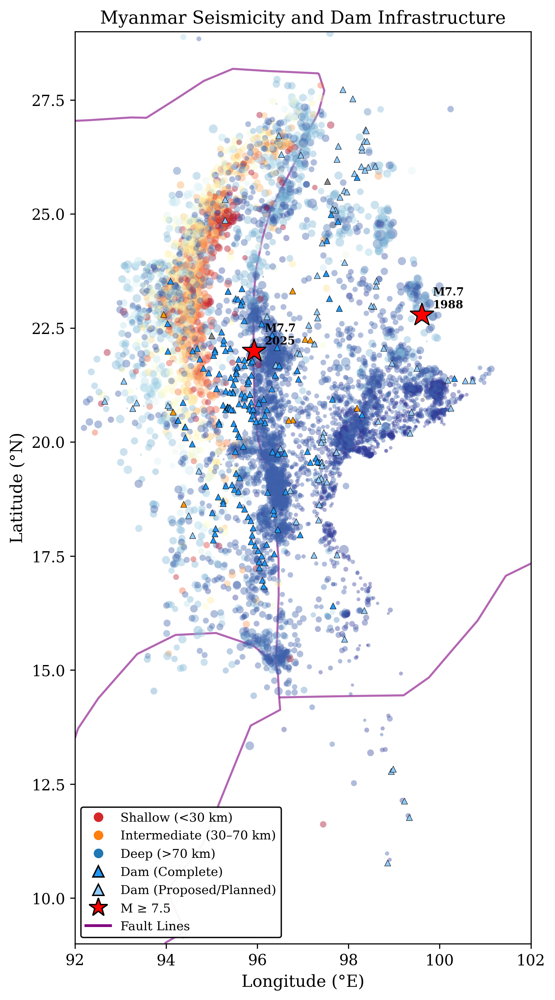
1. Seismicity & Dams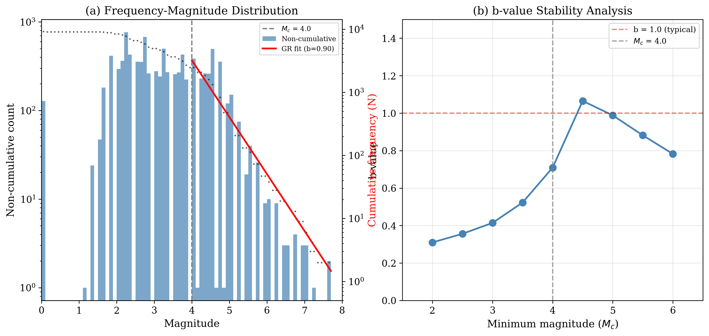
2. Frequency-Magnitude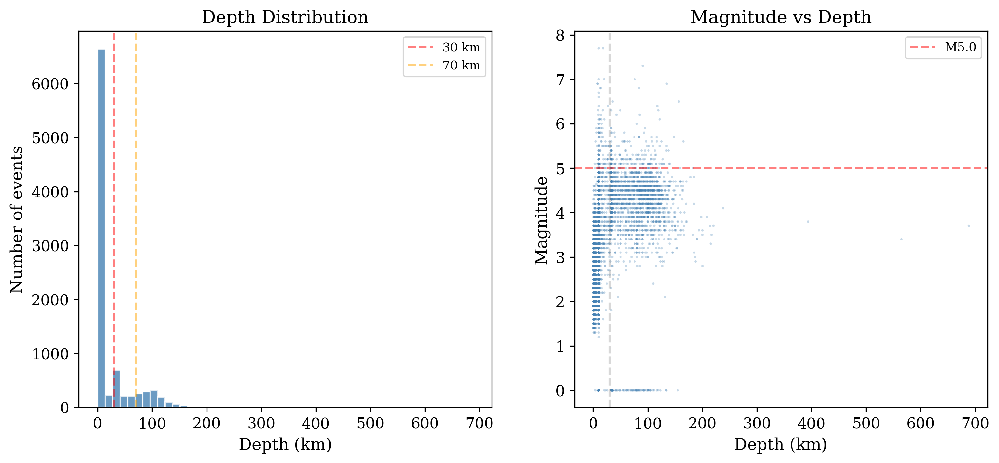
3. Depth Distribution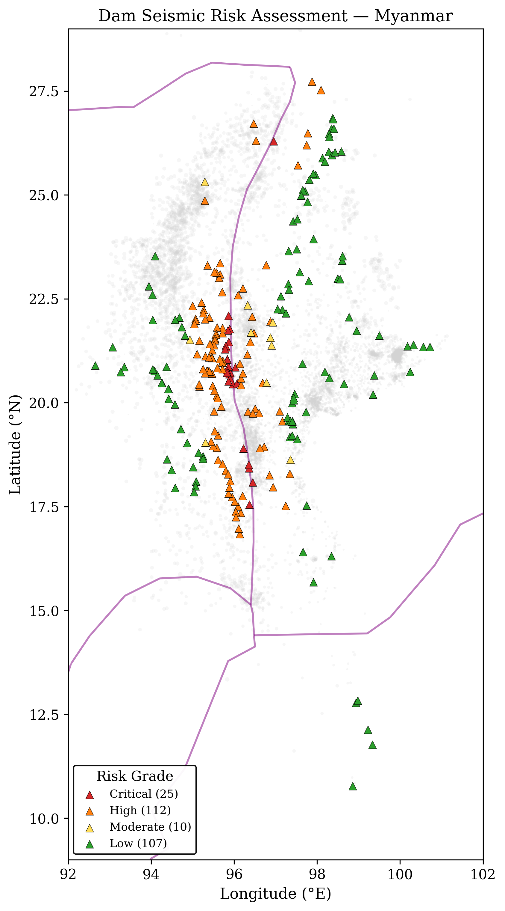
4. Dam Risk Map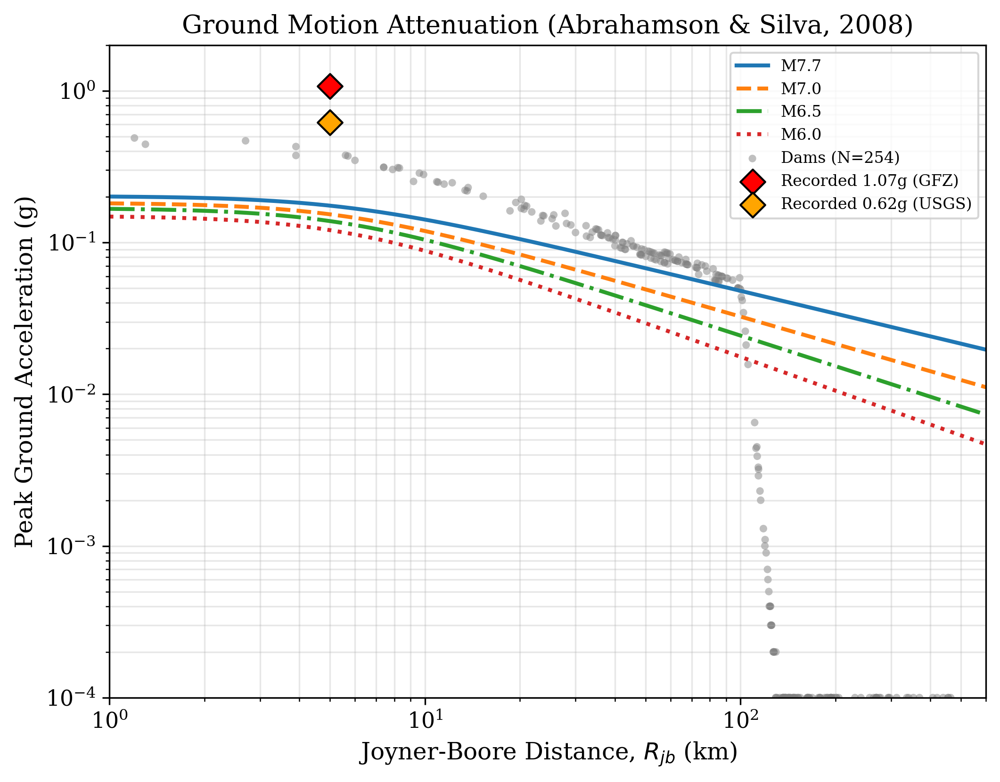
5. PGA Attenuation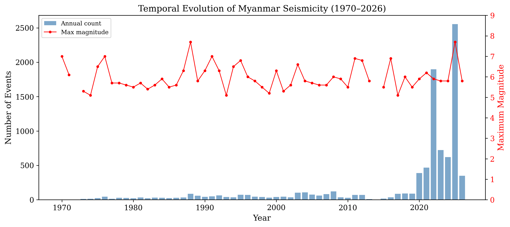
6. Temporal Evolution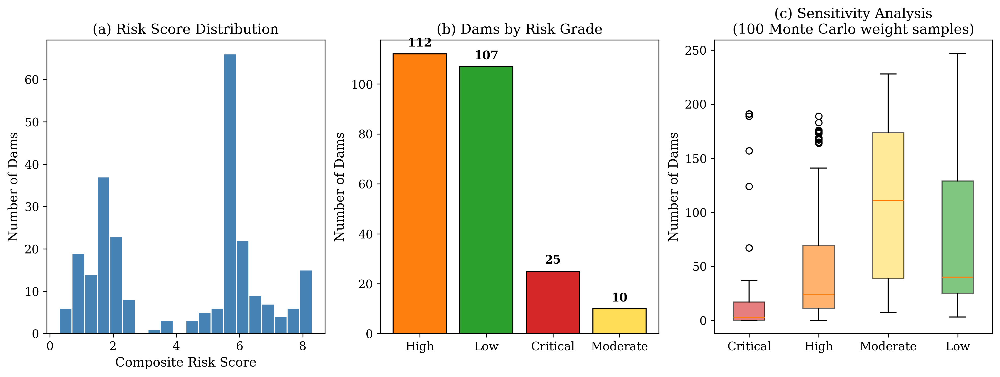
7. Risk Distribution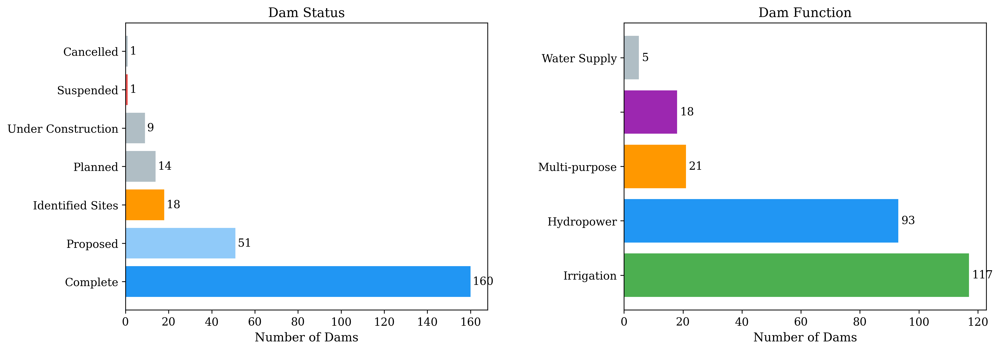
8. Dam Types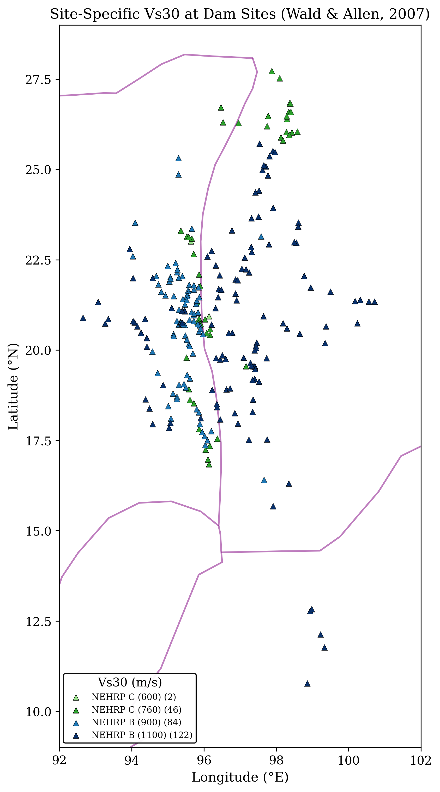
9. Vs30 Map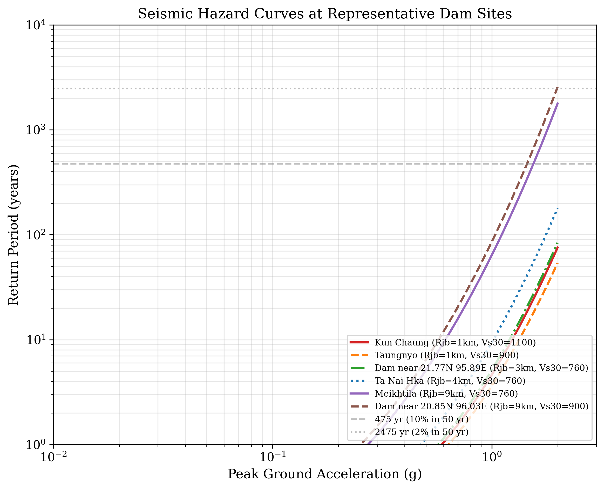
10. Hazard Curves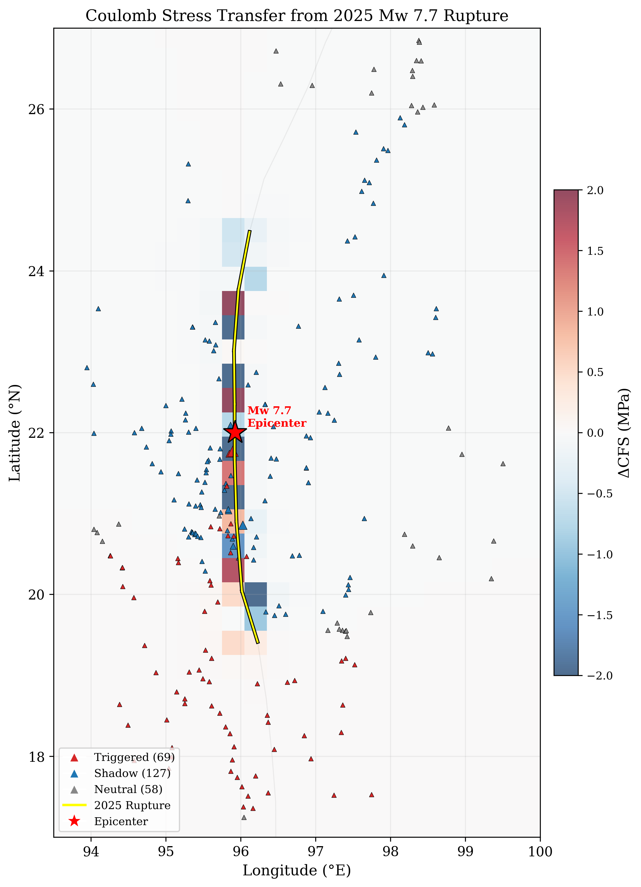
11. Coulomb Stress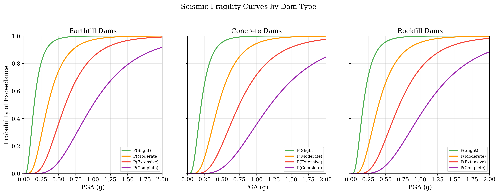
12. Fragility Curves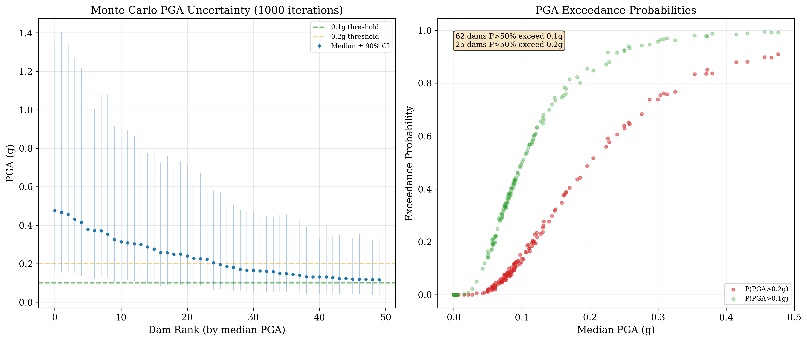
13. Monte Carlo PGA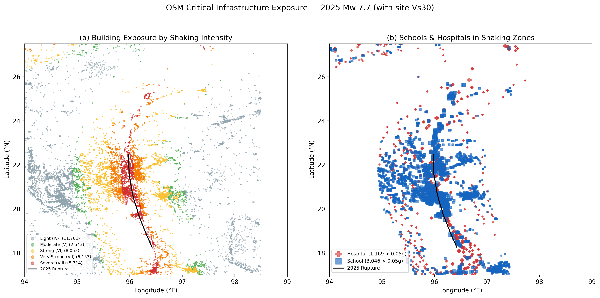
14. Building Exposure